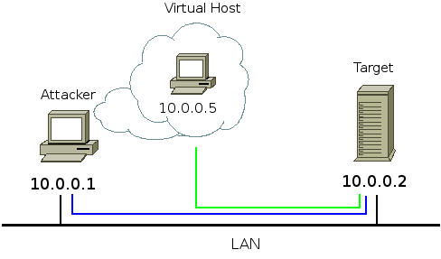

Sploit Mutation Framework
Userland TCP/IP Stack
Sploit contains a TCP/IP network stack interely implemented in userspace.

Supported features:
- TCP, IP, Ethernet protocols
- Transmission timeout. Adaptative setting of the timeout value
using the Jacobson e Karn algorithms, with round-trip time measurement.
- Retrasmission of all the packets in the queue when the transmission
timeout expires.
- Persist timer and window probes in case of zero size window
- Flux control based on the sliding windows mechanism
- Out of order segments
- Cumulative delayed ack
- MSS negotiation during three-way-handshake
- Congestion control: slow start algorithm and congestion avoidance
- Data sent inside SYN packets
Unsupported features:
- Congestion control: fast recovery, fast retransmit, Nagle's algorithm for
silly window sindrome
- Connection establishment timer
- Keepalive timer
- FIN_WAIT and FIN_WAIT_2 timers
- Reception of overlapping TCP segments
- All the TCP options beside the MSS
- All the IP options